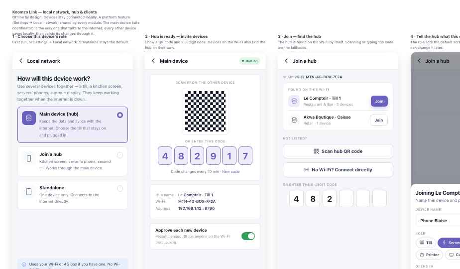

Koomzo User Guide
Run your business on the phones and tablets you already have.
Koomzo is one app for selling, serving, booking and keeping your figures — built for restaurants, hotels, shops, salons, gyms and service counters in Cameroon and West Africa. It keeps working through power cuts and when the internet is down, and it grows with you: start with one phone, add devices and modules when you’re ready.
Start on what you have
Every screen works on a phone, a tablet or a laptop — or on professional POS terminals with a built-in printer when you want them. See P2.
Works without internet
Orders, the kitchen and cash keep going. Everything is sent when the connection returns.
Cash, MoMo, Orange Money
Split any bill between them. Amounts in FCFA, to the franc.
How to read this guide. The Platform chapters explain what every Koomzo business shares: devices, offline, payments, screens. Each module guide then follows the same six parts, so you always know where to look. Choose yours in Module guides.
Start small, grow later
Lite, Mid and Full
Koomzo shows you only what you need. Every feature in this guide carries a tag telling you when it appears. You can switch on more at any time, and nothing you've set up is lost.
LiteOpen and take money
- The core screen of your module
- Cash, MoMo, Orange Money
- Works offline on one device
- Staff and PINs
MidThe daily loop
- Several devices on one Wi-Fi
- The screens that coordinate a team
- Screens on a TV
- Modules talk to each other (P7)
FullControl and growth
- Approvals and manager rules
- Reports and day close
- Detailed stock and counts
- Several locations
Some features are marked
Choose your business
Module guides
Every guide follows the same six parts: Is this for me? · Set up · Run the day · Screens · When something goes wrong · Go further — plus task cards for your staff.
Platform · P1
Getting started Lite
- Create your accountWith your phone number. You become the owner.
- Add your business and locationName, town, currency (FCFA) and VAT rate (19.25 % in Cameroon). One location to start; add more later on Full.
- Add your staffEach person gets a role — owner, manager, cashier, server or cook — and a 4-digit PIN. The role decides what they can see and do.
- Choose your business typePick Restaurant & Bar. Koomzo opens the register and the floor; everything else stays hidden until you switch it on.
Platform · P2
Devices & roles
One device can do everything. As you grow, each device takes one job. Watch a few minutes of service at Chez Mama Ngono — then cut the internet and see that nothing stops.
The till that stays on and plugged in — a laptop or tablet on a power bank. Keeps the data, talks to the internet.
Take the order at the table and send it. Any cheap Android phone works.
A tablet in the kitchen. Orders arrive by station; the cook taps Ready. Mid
A tablet on the counter. Customers order and pay themselves. Full
A TV with a stick. Shows the menu and prices from the till. Mid
Two ways to equip your restaurant
Koomzo is not tied to one brand of device. Start with everyday phones and tablets, or choose professional point-of-sale hardware — or mix both. The same app runs on all of them.
- Android phones and tablets, a laptop for the till
- Bluetooth receipt printer, from about 25 000 F
- Lowest cost — often devices you already own
- Best for a maquis or snack getting started
- All-in-one counter tills with a built-in printer and a customer screen
- Rugged handhelds for servers, with printer, card reader and NFC
- Built for long shifts, heat and dust; easier to manage in numbers
- Supplied with Koomzo installed, under your reseller's brand if you wish
| Use | Example terminals (Android) | Indicative price |
|---|---|---|
| Server handheld — order and print at the table | Sunmi M3 · PAX A920MAX | about 200 000–300 000 F |
| Counter till — 15.6" screen, printer, customer display | Sunmi D3 Pro · Sunmi D3 Mini · PAX E800 | about 260 000–420 000 F |
| Larger roll-outs — own branding, remote app updates | Direct from manufacturers such as HCCTG or Datamega | On quotation |
Prices are indicative, converted from international list prices, before shipping and duties. Ask your Koomzo reseller for a tested model and local price.
Platform · P3
Working offline Lite
Koomzo saves every action on the device first, then sends it when it can. You never wait for the internet to take an order or close a table.
- Taking orders, sending to the kitchen
- Kitchen screen, floor, moving tables
- Cash payments and split bills
- Voids and notes
- Kiosk orders paid at the counter
- Confirming a MoMo or Orange Money payment
- Changing menu prices, taxes or staff
- Reports for the owner away from the restaurant
- Setting up a brand-new device for the first time
The sync light
Top right of every screen. Glance at it; you rarely need to do anything.
Before you log out or switch business, wait for Synced. Logging out clears the device for the next person, and Koomzo will warn you if changes are still waiting.
A brand-new device shows Preparing offline data… the first time it connects while it downloads your menu, tables and staff. That needs the internet once; after that, it works offline.
Platform · P4
Several devices together Mid
Phones, the kitchen screen and the kiosk talk to the main device over your Wi-Fi — even when the internet is down. Only the main device uses data.

- Choose the main deviceSettings → Local network → Main device. Pick the till that stays on and plugged in — a laptop till is ideal.
- Join the other devicesOn each phone or tablet: Join. The main device is usually found by itself; otherwise scan its QR code or type its 6-digit code.
- Approve and give each a jobThe main device asks you to approve each new device. Choose its job: till, server, kitchen screen, kiosk or display.
Use the Wi-Fi you already have, turn on the main device's own hotspot, or buy a battery-powered pocket hotspot (MiFi) — about 35 000–60 000 F. It stays on for 8–10 hours when the power goes off, and works as your local network even with no data credit.
The other devices keep taking orders and show Main device lost · 3 waiting. Cash works; MoMo waits. A manager can make another device the main one.
Choosing a pocket hotspot. Look for one that is unlocked (takes any MTN, Orange or Moov SIM), has a 2 000 mAh battery or more, and allows 10 or more devices. Budget models such as KuWFi or E-Transit are sold on AliExpress; branded models such as the Mercusys MT110 (TP-Link) on Amazon. Ask your Koomzo reseller for a tested model.
Platform · P5
Payments Lite
Cash
Enter what was handed over; Koomzo shows the change. Amounts are whole francs.
MTN MoMo · Orange Money
Enter the customer's number. They confirm on their phone while a countdown runs. Needs the internet on the main device.
Split
Part MoMo, part cash. Or split by what each person ate, or evenly.
Every receipt carries a ticket number such as DLA-01-0412-0057: location, till, day's session, and number — so any receipt can be traced.
Platform · P6
Menu boards on a TV Mid
Put your menu on any TV with an Android stick or a smart TV. The board reads the dishes and prices from your register, so you change a price once.
- Pair the TV: it shows a 6-digit code; enter it in Signage → Screens.
- Choose what plays: the menu, a dish of the day, a promotion. One list of slides can play on every screen.
- By time of day: breakfast until 11:00, lunch after, the bar menu at night.
- No internet? The TV keeps showing the last version it received.
Full set-up: Signage module.
Platform · P7
Modules working together Mid
Koomzo is one system, not eight apps. What one module does, the others see — nothing is typed twice. Each module guide links here instead of explaining it again.
- In the hotel restaurant, the bill is charged to the room and appears on the guest’s folio.
- A sale at the register takes the item off stock, to the second.
- A dish sent to the kitchen uses its ingredients; a beer served at the bar leaves stock.
- At the salon, the colour used comes off stock when the service is finished.
- The gym’s juice bar sells against the member’s wallet; stock follows.
- Queue calls ticket W-042 and the wall screen shows “Counter 2”.
- A price changes once, and every menu board and price screen updates.
- At the end of the day, every module closes in one day close per location.
Each link only appears when both modules are switched on. A maquis without stock never sees the stock link.
Platform · P8
Templates — for Koomzo staff
Sample menus and floor plans that new customers copy during setup. Managed in Control Centre → Templates.
- CreateNew template: from blank, or a copy of an existing one. Menus can also be filled from a CSV file.
- EditThe same Menu and Floor plan editors customers use. On the left: name, description, which venue types see it, language, and the template it pairs with.
- PreviewShows exactly what the customer sees before copying.
- PublishChecks first — every dish has a price and a station, every floor plan has a table. Each publish is a new version; drafts stay private.
- ArchiveHidden from new customers. Copies already made never change.
Each card shows how many customers copied it and which version, so you know which templates work.
Koomzo User Guide · Version 2 · Screens shown are from the current Koomzo prototype. Names, dishes and prices are examples.